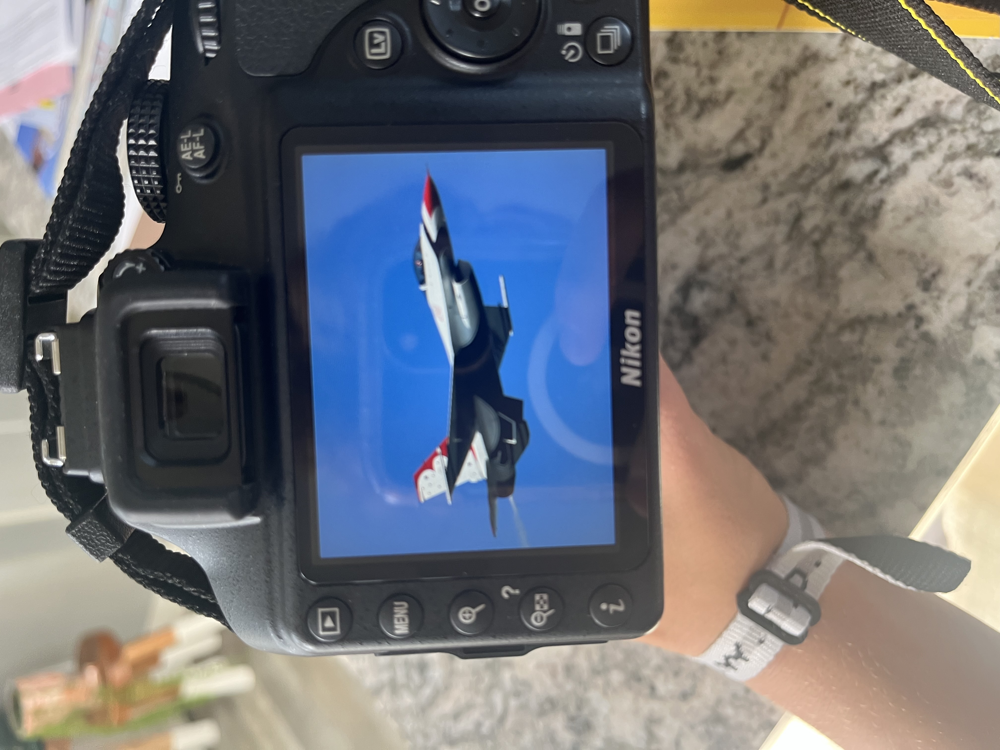

Photography Portfolio
Every image
tells a story.
From wildlife encounters and fast-paced sports to portraits, aviation, and automotive photography, each collection captures a different perspective of the world.
IM Visuals • Photography
Explore
Browse the collection.

Behind the Lens
Creating images that feel authentic.
Photography is more than documenting a moment, it's about telling a story about every person, place, or thing I shoot.